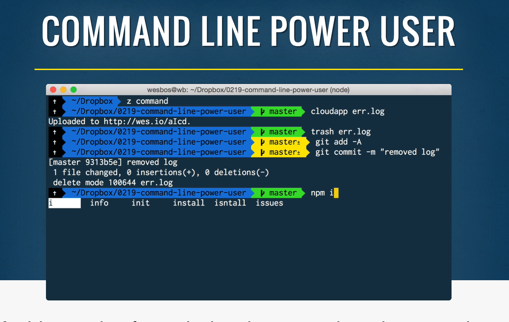
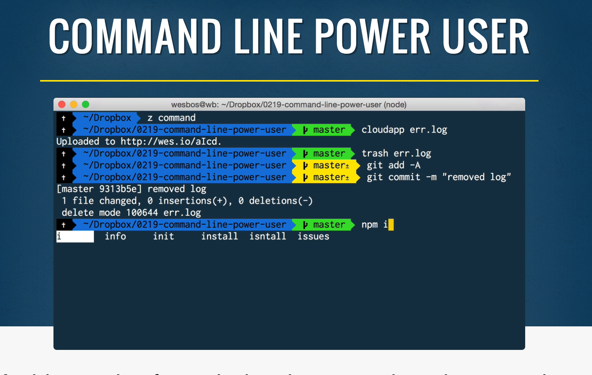
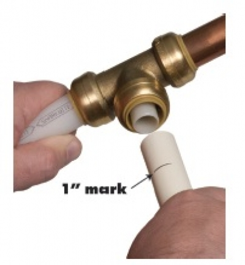

Modern
Workflow
& Tooling
🔥 Tasty Tooling Tips
wesbos.com@wesbosI'm
Happypeter
These slides will be available shortly after this talk
I'll tweet the link out.
 SublimeTextBook.comCommandLinePowerUser.comflexbox.io
SublimeTextBook.comCommandLinePowerUser.comflexbox.ioLet's talk about tooling.
First, a story
It's about
the plumbing industry
Traditional
Tools
- Copper Soldering
Uses Blow Torch / Starts Fires
Prone to crack at joints
High level of experience needed - Messy Glues
Time Senstive
Undoable - Compression Fittings
Prone to Leaking
Difficult to Install
Enter Shark Bite
SharkBite is a new type of fitting that plumbers can use to attach pipes together
It's Lego for plumbing!
- Snaps together instantly
- Can connect any material to copper
- Can be redone any time
- Much less prone to leaks
Shark Bite is more expensive,
- but -
it allows for faster work
and is much less error prone.
Many Plumbers have written it off.
It's too expensive.
It's too fancy.
It's changing the industry
many are blind to the benefits.